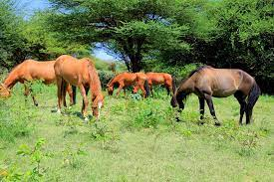
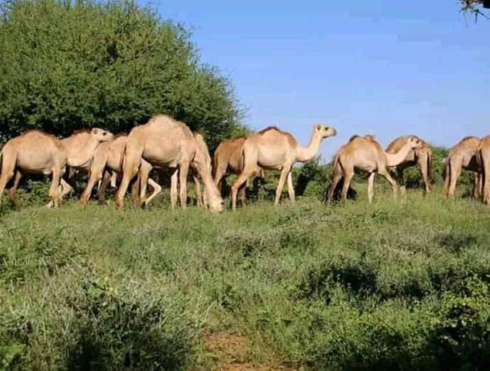
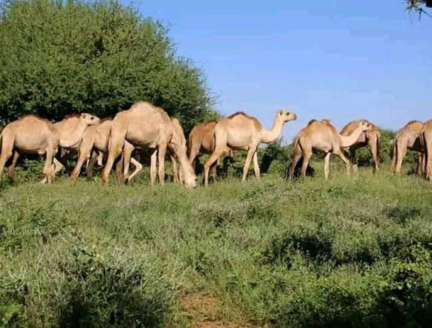

Somalia, officially the Federal Republic of Somalia, is the easternmost country in continental Africa. The country is located in the Horn of Africa and is bordered by Ethiopia to the west, Djibouti to the northwest, Kenya to the southwest, the Gulf of Aden to the north, and the Indian Ocean to the east. Somalia has the longest coastline on Africa's mainland. Somalia has an estimated population of 18.1 million, of which over 2 million live in the capital and largest city, Mogadishu. Around 85% of its residents are ethnic Somalis and the official languages of the country are Somali and Arabic, though the former is the primary language. The people of Somalia are Muslims, the majority of them Sunni. In antiquity, Somalia was an important commercial center. During the Middle Ages, several powerful Somali empires dominated the regional trade, including the Ajuran Sultanate, Adal Sultanate, Imamate of Awsame, and the Sultanate of the Geledi. In the late 19th century, Somali sultanates were colonized by the Italian and British Empires, who merged all of these tribal territories into two colonies: Italian Somaliland and British Somaliland. In 1960, the two territories united to form the independent Somali Republic under a civilian government.
 
